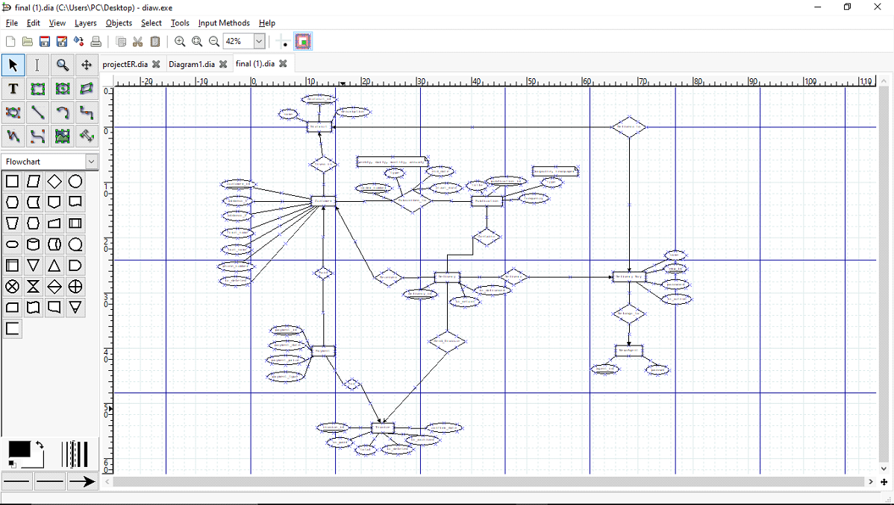
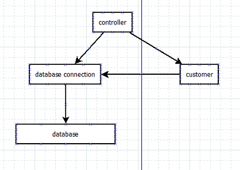
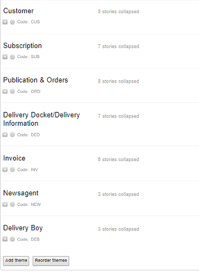
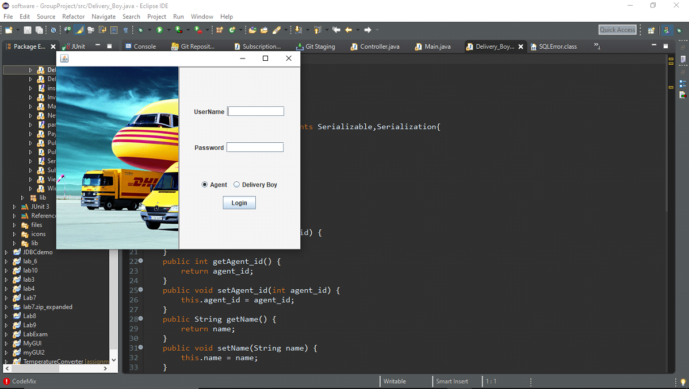
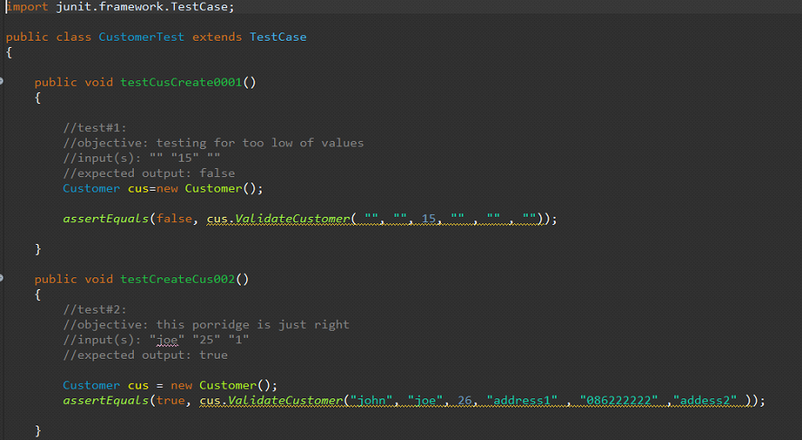

Publication Management (2nd year group project)
Introduction
During this project time line I had just about become comfortable with the main aspects of OOP and as a result, did not have the technilogical abilities I currently have.
This is a project that I had experience working on a team which is the more important aspect of this project in my opinion.
I have been unfortuante with other group projects so this one is essencial to have on my portfolio.
Project Scope
The product we intended to build was a system designed for a newsagent allowing them to keep track of customers, publications, deliveries and orders within the business. A system that would not only be easy to manage and control, but ideally easy to learn how to use. This system would store data into a database attaining all aspects of a newsagent’s business. I.e. customers information, what subscription type they require, how often they receive deliveries, whether the customer has payed or not etc. We also wanted to allow the ability to remove customers, orders, publications and add new ones. Even managing the delivery boy log in and check in times. Having documents printed automatically we really wanted a system that could manage everything. Therefore, the project was named Publication Management.
Project Management
We deployed this project using the agile approach. We did this by splitting up the requirments into sections and grouping them together based on likeness. We then priortised what the most importent requirments were and set out what work needed to be done in each sprint. We further split up the work amongst the group to do in each sprint. Every week we had a group meet up and desgussed what it is we had done and what we would do by next meeting.
Architecture and Implementation
When designing the ER diagram, we connected Entities by using relationships. We also realised the subscription section was a relationship and not an Entity because a customer subscribes to publication. We had later added our own new relationships and made new Entities based on individual user stories. For example: A customer lives in a district. Therefore lives_in is the relationship. A delivery boy delivers to a district. Therefore, Delivers_to is the relationship. My initial attempt at an ER diagram turned out good but was still missing a lot of information. In the later weeks when our team was put together, we looked at every members diagram attempts and put best elements together. After reducing, tweaking and discussion our diagram still ended up being quite large. It was neat, easy to understand, left with little descriptions over the attributes that needed clarification. The type of relationship the Entity had with other entities were indicated with arrows.
 When converting this ER most if not all of the database code within the project itself was written by one member. During Group project classes we did a lot of verifying. We had copied the code onto the Microsoft “work together” app on the browser allowing changes to be made by everyone live while I called out each entity and attribute as well as the datatypes required, default values and limits. The way in which we had access to the code in our classes was by calling specific methods they created. For example db.UpdateContext(customer, cus_id) would update a row in the table containing the id value left in the customer class.
Having already started code, our plan went from a load of classes filling up and not communicating, to an MVC like architecture. We had decided on this as it would have allowed us to create and implement a GUI into the project much easier. Instead, the way we ended up carrying out this architecture caused one massive controller class which communicated with most methods via the command line. In hindsight I would try implement MVC better so less methods would be lost in command line code.

The command line code being put into the controller was a very messy way of doing it as it had nearly 1000 lines of code which made looking for methods
more confusing.
The Small bit of GUI our project had, did have a view class that was much better kept.
Customer Example:
User details are inserted into the controller.
These are passed into the customerCreate method which sends details to the customer class.
In the same method the database connection method called customerCreate is called looking for the parameter of an object.
The customer object with all the inserted details is put into the connection method which contains database insertion code.
The customer is then created.

other database classes were used like this to allow us to view an entity when passing in an object as well as an ID.
Another architecture decision we made towards the end of the project was to use a switch statement to allow us as developers to work form a starting point rather than retyping in the same details whenever we wanted to test our program.
The classes I created were the customer class, Delivery boy class and the controller class.
It was my job to maintain the controller classes allowing classes to communicate with the command line.
I had to communicate the buttons in the GUI to send the delivery boy to the delivery boy menu and the new agent to the newsagent menu depending on who logs into the system.
Within the controller class I created the first create view and modify methods.
I asked the members of the team to copy this code and to use the same format in my methods as well as their own values.
Ie. createCustomer() createPublication(), createSubscription()
This made many methods which made the controller class too long.
For testing the code, I created a method within the class.
For the customer class for example ValidateCustomer was created.
This would be called in the assertEquals that takes a Boolean as the output/return value and the entered details as the input.
In the product code if this class is false, you will be asked to re-enter details.
Here I am testing for values in and out of the boundary of validity.
When the user stories were first written we had designated a colour per person, the stories since then have been reworked so many times that who did what is a blur.
One of the last edited was for the log in.
On the very right are time estimations.
As a group we all individual went through each user story verifying them and estimating how long we thought that user story would take to do.
JUnit Test Example
Conclusion
If I was to do a project like this again, I would work straight form GUI and ditch command line.
Based on my current knowlage I would have used encription on the password input and would haved used my minimalistic JFrame style to create something intuative and easy on the eyes.
Although, at the time I found the command line program to be very fun to create and I did it in an intuative way that allowed users to jump between all aspects of the program intuatively.
I think this would have put our software studies into practice as well as compressed the controller class as we made an MVC like design pattern.
It wasnt fully authentic as we had individual controllers for each model apposed to haveing a base contoler class they could all inherit from or one manager with a list of entities.
All in all, this project thought me a lot about working in a team and the many challenges a team may face.
I was very lucky to have members on my team who would not only help me but listen when I had bits of help that I thought I could contribute.
I was more limited in my ability to code before the project than I was after the project.